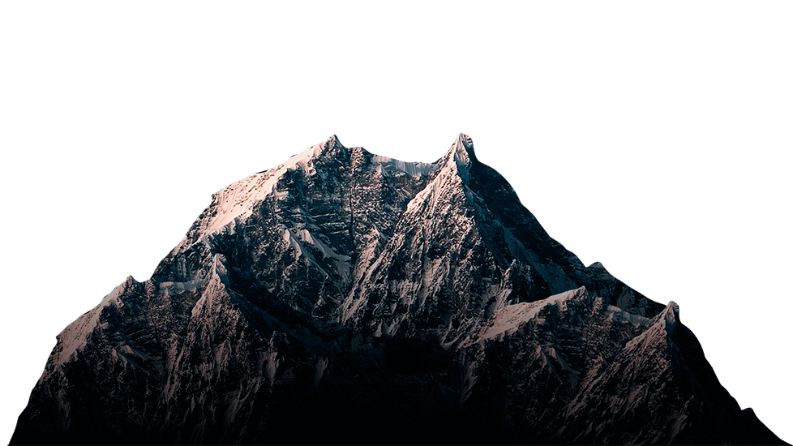
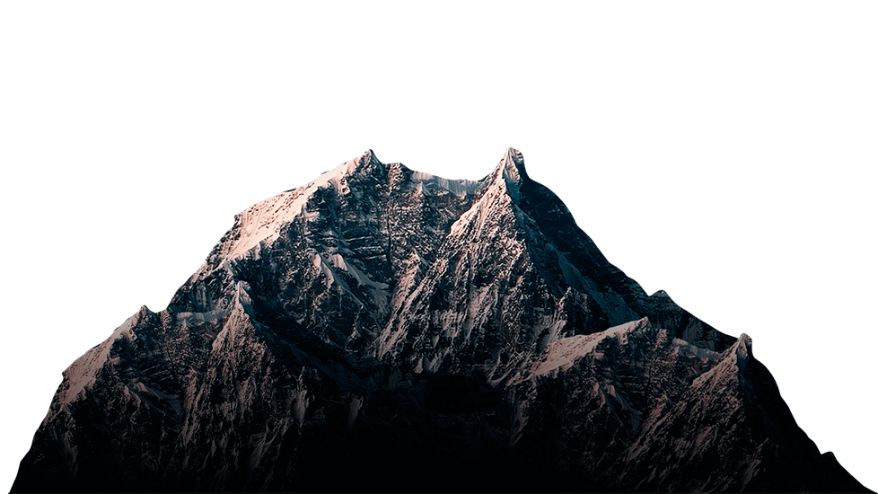

Здравствуйте, меня зовут Ишик. я самое милое существо на планете! А ещё у меня есть своё шоу, которое называется Б.З.Н.Д. Это мой сайт. если хотите узнать подробнее о нём, то переходите по кнопке "о сайте". Хотите посмотреть участников шоу которые в данный момент учавствуют в шоу (или учавствовали) тогда переходите по кнопке "участники". А пока что расскажу о своём шоу.
ЧТО ТАКОЕ Б.З.Н.Д.?
Вообщем Б.З.Н.Д. это шоу в котором участники борятся за новый дом. Они проходят совсем не жёсткие испытания, обещаю это совершено безопасно. И так, каждый в этом шоу сам за себя. Участники не должны помогать друг другу. В каждом испытании должен быть один участник. Если будет допустим два участника, то эти участники должны пройти дополнительное испытание только для их обоих. А те кто проиграл, будут находится под исключением. Тоесть, они покинут это шоу. У этого шоу большие премущества. Вы не только сможете получить новый дом, но и завести себе новых друзей!
О СЕБЕ
Вообщем, теперь немного обо мне. Как я уже говорил, меня зовут Ишик. Я магическое существо ввиде буквы "И". У меня много способностей (да это правда, и вообще я никогда не вру!) Так вот, Б.З.Н.Д. это не единственое шоу где участники проходят испытания ради какого-то приза. Я был удивлён когда узнал это. Изначально, я всегда проводил это шоу, но потом я в ютубе (вроде так называется) увидел такие шоу как: И.Н.М.Т.; К.Б.З.К.; Б.З.О.М.; Б.З.В.С.; Т.О.В.А.; П.М.С.; Н.О.С.; Н.Б.О.И.; С.З.Ч.Т.; С.З.Н.П.; И.О.Н.; Б.З.К.П. и так далее. Да, много есть оказывается подобных шоу. Так, что-то мы не на ту тему перешли. Вообщем, я самое добро существо на свете, вы точно можете мне доверять)))
ХОТИТЕ ПОУЧАВСТВОВАТЬ В МОЁМ ШОУ?
Чтож, если вы хотите поучавстовать в моём шоу, то нажмите снизу на кнопку "подать заявку". И тогда у вас будет возможность попать в моё шоу! Удачи!
подать заявку
 
